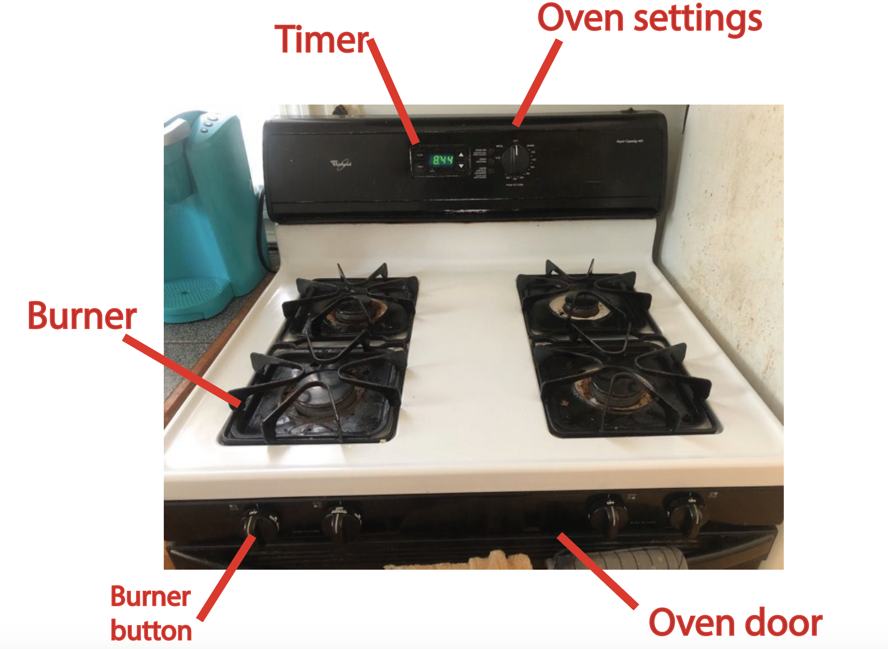
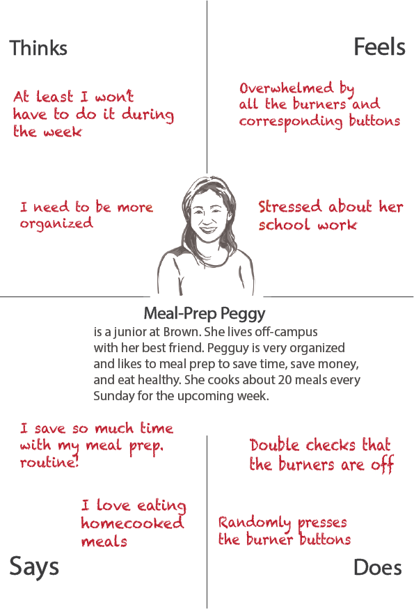
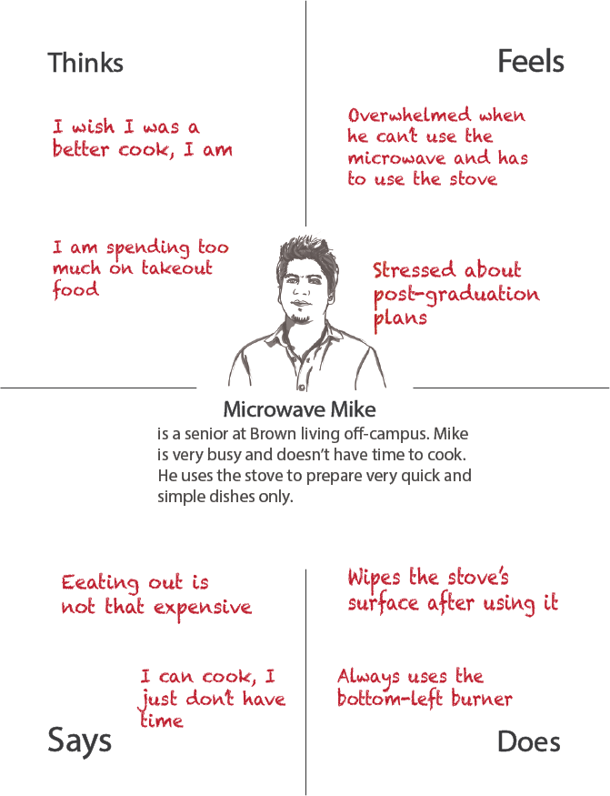
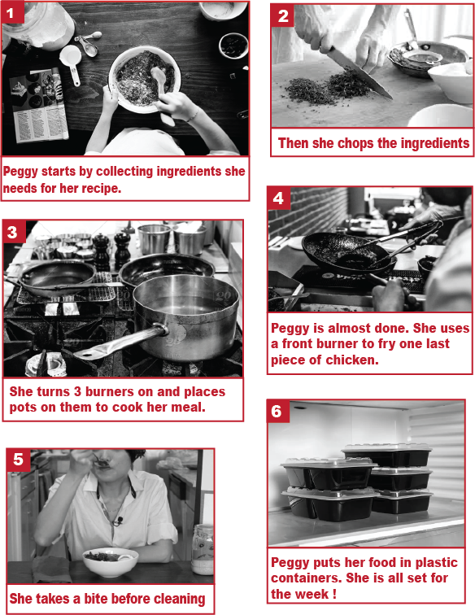

Are gas stoves efficient for busy college students?

A gas stove allows users to cook meals. Twisting the corresponding button turns a burner’s flames on. And the user can adjust the temperature accordingly using the same button.
But are gas stoves efficient and easy to use? To find out, I asked the following questions to 3 people using a gas stove:
Questions asked
- What do you use the stove for?
- Walk me through your process of using this stove
- On average, how many times a day do you use the stove on weekdays? On weekends?
- How long does it take to cook your most basic dish using the stove? What about your most complex one?
- What is frustrating about using this stove?
- What is satisfying about using this stove?
- Do you use more than one burner at once?
- If so, how do you determine which ones to use?
- Which button corresponds to which burner?
- Do you get the buttons confused?
- How do you keep track of the different burners while cooking?
- How do you clean your stove? Walk me through your process.
- Do you use the stove’s timer?
- How often do you use the oven
- On a scale of 1 to 5, how concerned are you about safety when using the stove? (1 being very concerned, 5 being not concerned at all)
Answers
They gave me the following answers:
Highlights
- Stove “gets the job done.”
- Use varies from quick and simple dishes to more complex ones.
- Buttons are confusing: either relies on memory or trial and error.
- Safety is a major concern: users double check that burners are off.
- Some features (i.e. timer) are not used: barely noticeable.
Details
Roommate 1
- Uses the stove when the microwave is not an option, e.g. fried eggs.
- Uses the stove a few times a week, mainly for breakfast.
- Takes between 5 to 10 minutes on average, and only uses one burner.
- Takes between 5 to 10 minutes on average, and only uses one burner.
- Always uses the bottom left burner, so remembers which button to turn.
- Finds the stove fairly easy to use but is concerned about safety.
- Didn’t know the stove had a timer.
Roommate 2
- She uses the stove to meal prep for the week.
- Takes 2 to 4 hours on average and uses all the 4 burners to cook her meals for the upcoming week.
- Lift grill and scrubs in addition to cleaning the surface with a sponge after using the stove.
- Wishes that the stove had more than 4 burners because she cooks in bulk, and several meals at once.
- Uses back burners for slow cooking or dishes with minimal manipulation (ie pasta, boiling veggies). Uses front ones to stir fry.
- Finding right buttons to turn burners on/off and adjust temperature is extremely confusing. Relies on trial and error and always double check.
- Does not use the stove’s timer, prefers her phone’s.
- Uses the oven once a month to bake brownies.
Friend
- She uses the stove to cook meals for her family (husband and daughter).
- On weekdays, she spends one hour on average for dinner, usually more during the weekend.
- Uses all 4 burners , and memorized buttons’ positions over time.
- Very concerned about safety: gas and open flames are dangerous, especially with a toddler in the house.
- Wipes surface after each use, deep cleans with dish soap once a week.
- Finds the stove’s clock useful to keep track of time, but does not use a timer.
- Considering switching to a ceramic stove top for safety reasons.
Empathy maps
The responses led to personas: Meal Prep Peggy and Microwave Mike
Meal Prep Peggy
Meal Prep Peggy's empathy map:

Microwave Mike
Microwave Mike's empathy map:

Story Boarding
Every Sunday afternoon, Meal Prep Peggy cooks her meals for the upcoming week.
